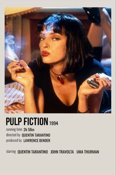
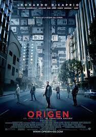

Nuestras recomendaciones del día te haran sacar tu lado crítico, cuentanos ¿Cuál fue tu favorita?
Pulp Fiction (1994)
Director: Quentin Tarantino
Género:Thriller. Comedia negra
Se trata de una de las películas más afamadas de su director. Con una estructura fundamentada en saltos temporales, Pulp Fiction narra las aventuras de dos asesinos a sueldo que trabajan para uno de los gánsteres más peligrosos de la ciudad, el cual les ha encomendado, entre otras cosas, recuperar un misterioso maletín.

Origen (2010)
Director: Christopher Nolan
Género: Ciencia ficción
Como es habitual en el cine de Nolan, el espectador no debe despistarse ni un segundo. Esta película en la que la acción, el suspense y la ciencia ficción encajan a la perfección, el director propone un mundo en el que existen los invasores del subconsciente humano.
Cobb, interpretado por Leonardo DiCaprio, es un espía experto en adentrarse en el subconsciente humano para implantar una nueva idea. Su último trabajo consiste en penetrar en la mente del hijo de un magnate para implantarle una idea. A cambio, Cobb podrá volver a ver a sus hijos.

Casablanca (1942)
Director: Michael Curtiz
Género: Drama romántico. Bélico
Es un clásico del cine de Michael Curtiz contextualizado en la Segunda Guerra Mundial. Una historia de amor imposible protagonizada por Ingrid Bergman y Humphrey Bogart. Casablanca es el lugar en el que Rick e Ilsa, encarnados por los anteriores, se reencuentran después de algunos años.
Con el paso del tiempo, Casablanca se ha convertido en uno de los filmes más famosos de todos los tiempos, es una película que ha sido referente en el cine posterior. De ella quedan diálogos memorables que incluso conocen aquellos que no han tenido la oportunidad de verla.